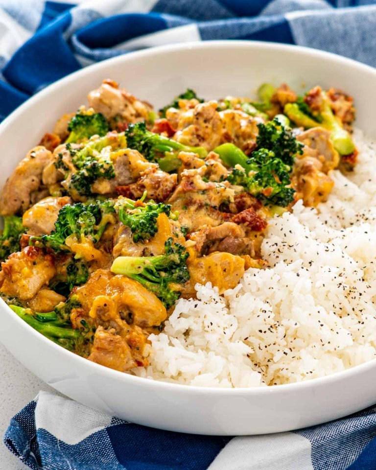

Chicken and Brocolli

Delicious and Easy 15-minute meal for people of a certain caliber
A personal favorite.
Best when you need a quick bite or not feeling particularly creative for dinner.
Also known as the "pollo y brocolli" in spanish
Ingredients
- Chicken Breast or Thighs (the thicker the better)
- Brocolli (frozen or fresh is fine)
- Salt and Pepper
- Olive Oil (Bottled or spray)
- Garlic (Minced)
- Adobo (Key for seasoning the meat)
Recipe Instructions
- Heat the olive oil in a large skillet over medium heat. Add the chopped chicken and season with adobo, salt, pepper and toss well. Cook for 4 minutes or until the chicken is no longer pink and start to turn golden.
- Stir in the garlic and cook for another 30 seconds or until aromatic. Add the broccoli florets and cook for 3 minutes.
- Serve over noodles, mashed potatoes or zucchini noodles/cauliflower rice for a low/carb option.